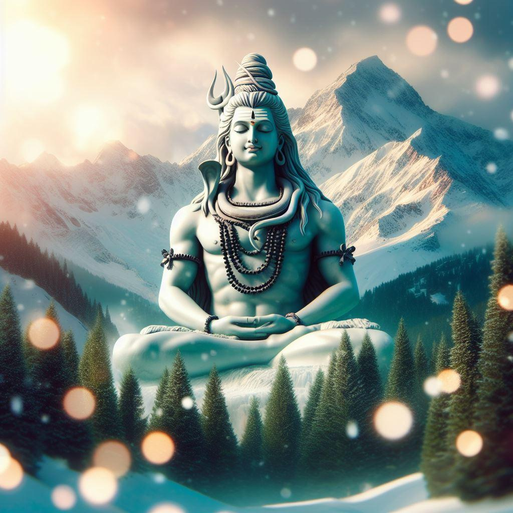
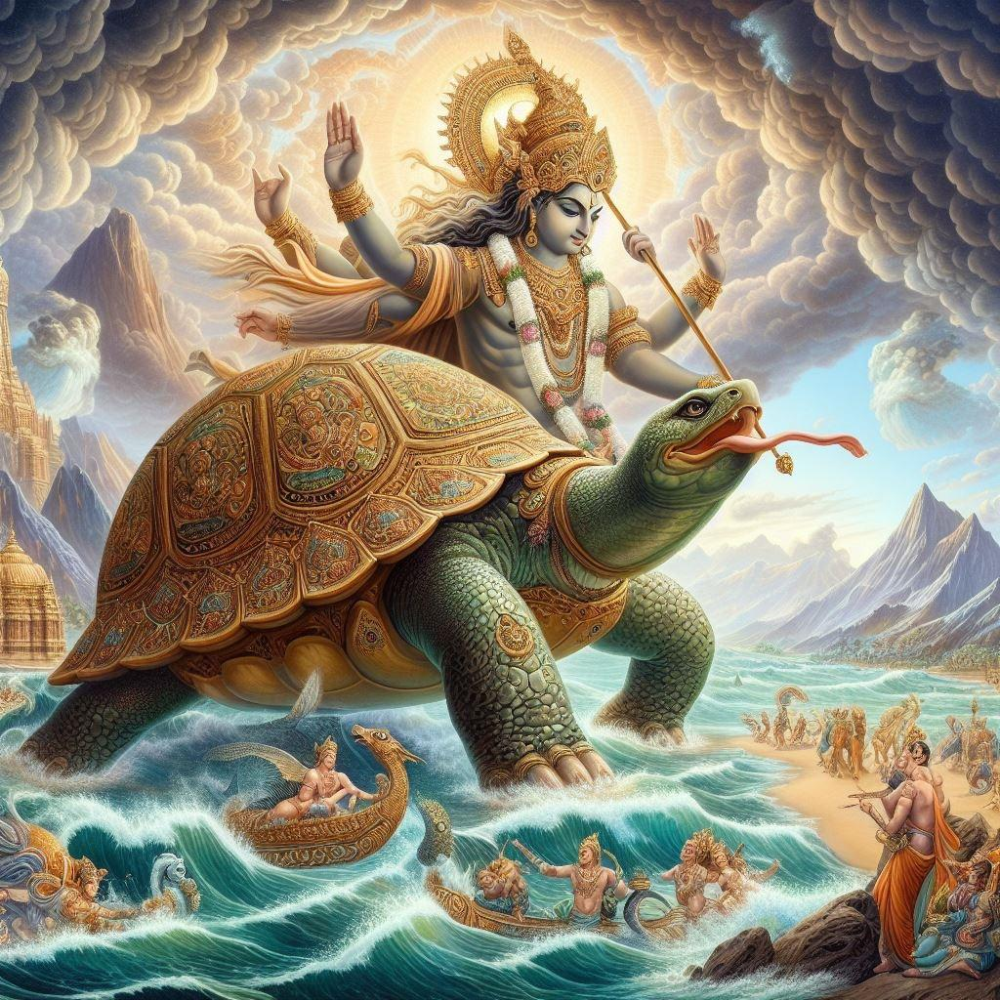
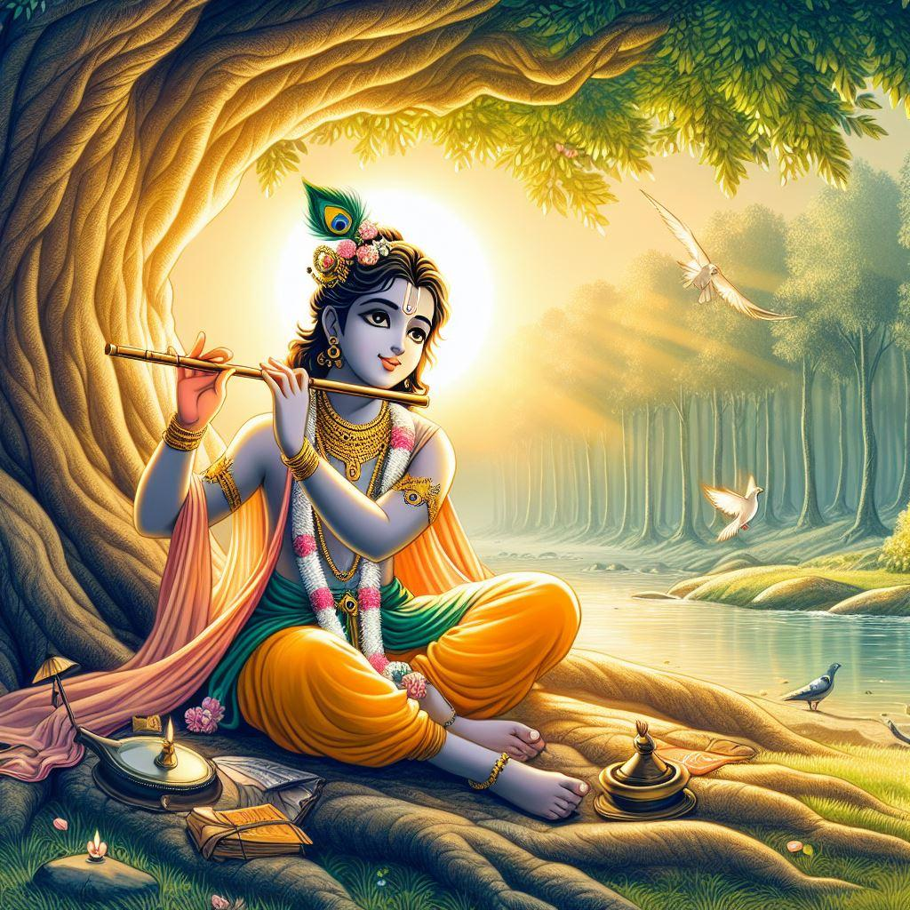
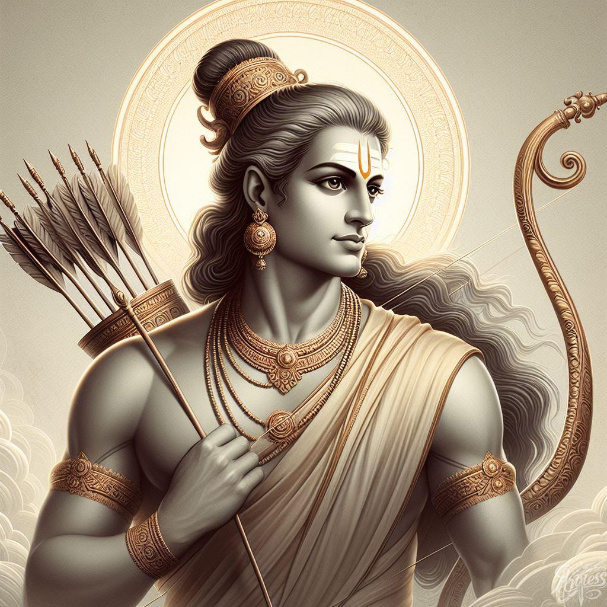
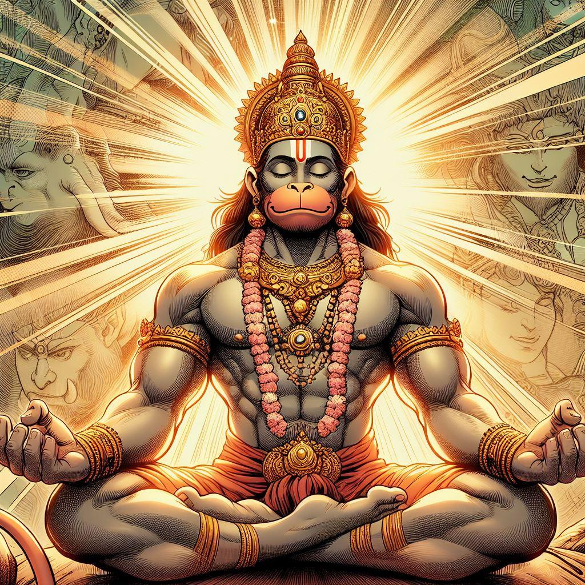
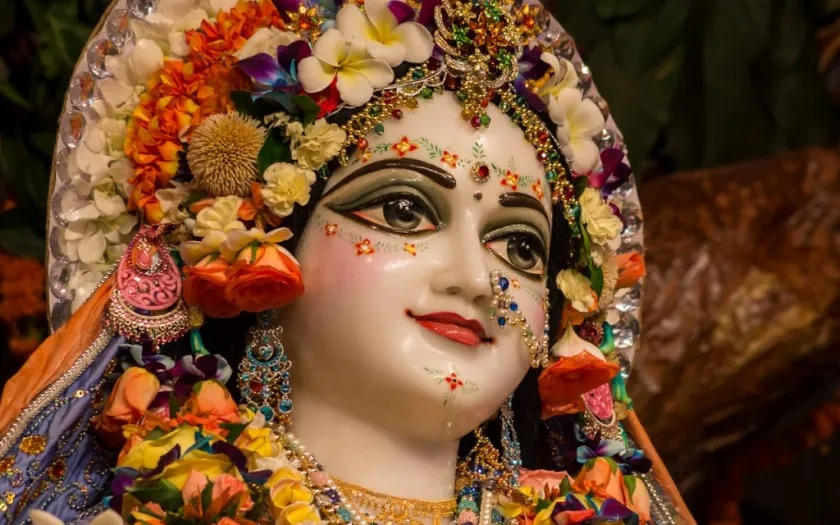
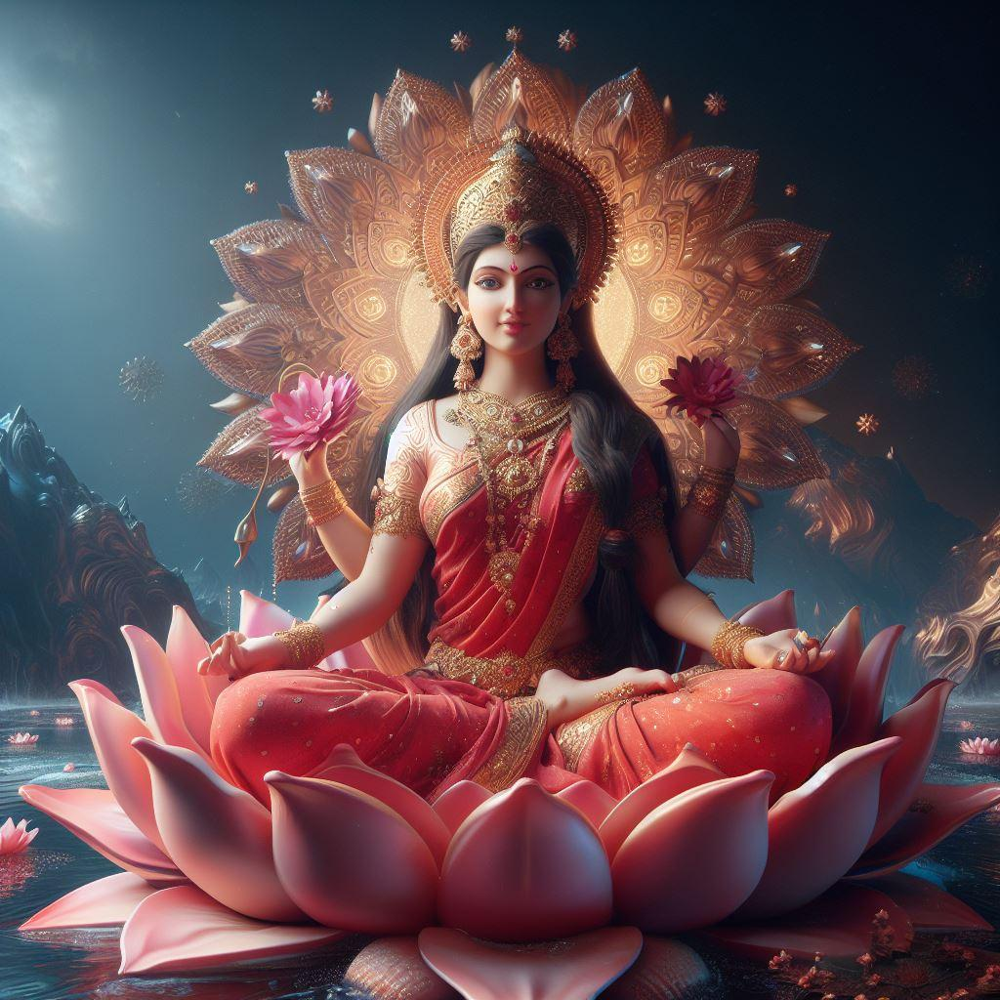
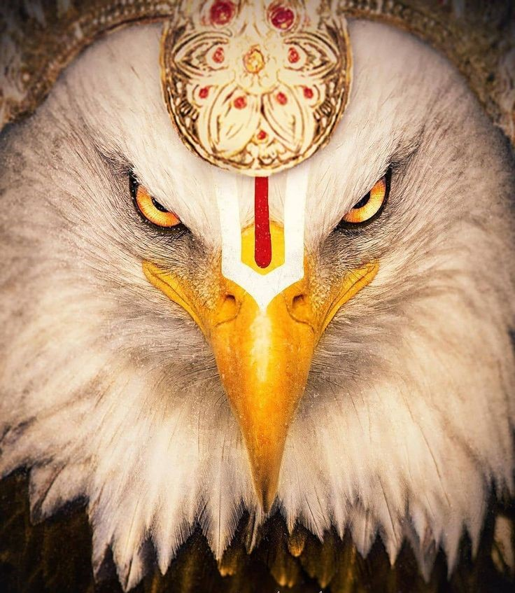
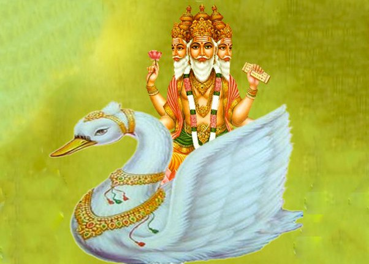
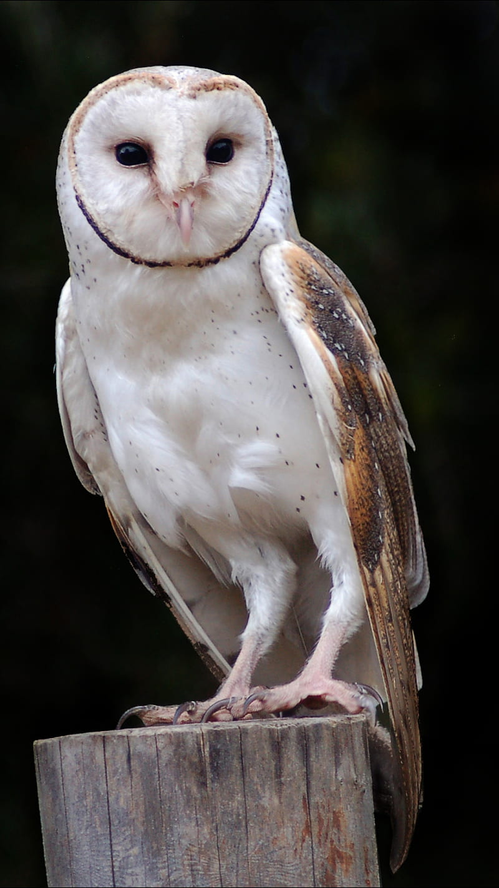

Within the corridors of consciousness, rise high, Where dreams take
flight beneath the endless sky. With thoughts as wings, soar beyond
the norm, Unveil the vistas where creativity forms.
In the silence of contemplation, find your might, Let imagination
paint the canvas of the night. Each idea a spark, igniting the
divine, Ascend through intellect, let brilliance shine.
Unlock the gates of perception, let wisdom flow, In the realm of
thought, let your essence grow. Elevate yourself through the power
of your mind, A journey of discovery, boundless and unconfined.
Journey to Devotion Explore the Path of God
Mahadev
Lord Shiva, also known as Mahadev, is one of the principal deities of Hinduism, revered as the Supreme Being in the Shaivism tradition. He embodies the trinity of creation, preservation, and destruction, highlighting the cyclic nature of the universe. With his serene yet formidable presence, Shiva is often depicted in deep meditation, symbolizing his mastery over the mind and senses. His matted hair holds the river Ganga, signifying his role as the life-giver. The crescent moon on his head represents time and its cycles, while the third eye on his forehead signifies wisdom and insight, capable of burning away ignorance and illusion. Draped in tiger skin and adorned with serpents, Shiva embodies asceticism and the power of nature. He carries a trident (trishul), symbolizing his control over the three worlds: physical, astral, and causal. The damaru (drum) in his hand marks the rhythm of the universe, and his blue throat, from consuming the Halahala poison, showcases his self-sacrifice for the greater good. Shiva's divine consort, Parvati, and their sons, Ganesha and Kartikeya, complete his family, each symbolizing various aspects of life and divinity.


Vishnu
Lord Vishnu, one of the principal deities of Hinduism, is revered as the preserver and protector of the universe. As part of the Holy Trinity (Trimurti) alongside Brahma (the creator) and Shiva (the destroyer), Vishnu's role is to maintain balance and order in the cosmos. He is often depicted with a serene demeanor, blue skin, and four arms holding a conch (shankha), a discus (chakra), a mace (gada), and a lotus (padma), each symbolizing different aspects of life and cosmic order. Vishnu is known for his ten avatars (Dashavatara), which he assumes to restore dharma (righteousness) whenever the world is threatened by chaos and evil. These avatars include notable incarnations such as Rama and Krishna, whose stories are central to Hindu epics and religious teachings. Vishnu resides in Vaikuntha, his celestial abode, alongside his consort, Goddess Lakshmi, who symbolizes wealth, prosperity, and fortune. Through his avatars and divine actions, Vishnu embodies compassion, mercy, and the unwavering commitment to preserving the moral fabric of the universe.
Shree Krishna
Lord Krishna, a central figure in Hinduism, is revered as the eighth avatar of Vishnu and is celebrated for his divine play (leela) and profound teachings. Born in the Yadava clan, his life is chronicled in ancient scriptures like the Mahabharata, Bhagavad Gita, and Bhagavata Purana. As a child in Vrindavan, Krishna performed miraculous feats, such as lifting Govardhan Hill and subduing the serpent Kaliya, showcasing his divine powers. Known for his enchanting flute-playing and playful exploits with the gopis (milkmaids), he embodied joy and divine love. Krishna's role in the Mahabharata, particularly as the charioteer and guide of Prince Arjuna, is pivotal; his discourse in the Bhagavad Gita provides profound spiritual wisdom and guidance on duty, righteousness, and devotion. Krishna is often depicted with blue skin, a peacock feather in his crown, and a flute in his hand, symbolizing his divine and musical nature. His consort, Radha, represents the epitome of devotional love, and their relationship is a symbol of the soul's yearning for union with the divine. Krishna's teachings and life continue to inspire millions, emphasizing love, compassion, and the path of righteousness.


Shri Ram
Lord Rama, the seventh avatar of Vishnu, is the central figure of the ancient Hindu epic, the Ramayana. Revered as the epitome of dharma (righteousness), Rama's life exemplifies virtue, duty, and devotion. Born as the prince of Ayodhya to King Dasharatha and Queen Kausalya, Rama's early life was marked by his adherence to dharma, even when faced with great adversity. His unwavering obedience to his father's command led him to accept a fourteen-year exile in the forest, accompanied by his devoted wife Sita and loyal brother Lakshmana. During this period, Rama battled numerous demons and formed alliances, notably with Hanuman and the Vanara (monkey) king Sugriva. The climax of his journey was the epic battle against the demon king Ravana, who had abducted Sita. Rama's victory over Ravana symbolized the triumph of good over evil. His reign as king, known as Rama Rajya, is often cited as a model of ideal governance and prosperity. Rama's life and deeds continue to inspire and guide millions, emphasizing the principles of righteousness, loyalty, and the unwavering pursuit of truth.
Hanuman
Lord Hanuman, a beloved figure in Hindu mythology, is revered as the epitome of devotion, strength, and loyalty. Known as the monkey god, Hanuman is a central character in the Ramayana, where he serves as a devoted disciple of Lord Rama. Born to Anjana and Kesari, with the wind god Vayu as his divine father, Hanuman possesses immense strength, agility, and the ability to change his form at will. His unwavering devotion to Rama is legendary, exemplified by his heroic feats, such as leaping across the ocean to Lanka to find Sita, carrying the Sanjeevani mountain to save Lakshmana, and burning down Lanka with his fiery tail. Hanuman's humility and selfless service are as remarkable as his physical prowess, making him a symbol of bhakti (devotion) and selfless service. Often depicted with a mace and a heart that reveals the images of Rama and Sita, Hanuman's iconography underscores his deep spiritual devotion. His tales and qualities continue to inspire devotees, teaching the virtues of courage, loyalty, and unwavering faith.


Radha Rani
Radha Rani, revered as the supreme goddess in the Vaishnavism tradition of Hinduism, embodies divine love and devotion. She is the beloved consort of Lord Krishna and is often depicted as his eternal companion, representing the soul's yearning for union with the divine. Radha's love for Krishna is considered the highest form of bhakti (devotional love), and their relationship is a profound spiritual metaphor for the bond between the human soul and God. Born in the village of Barsana, Radha's beauty, grace, and unparalleled devotion to Krishna are celebrated in numerous hymns, poems, and stories. She is often depicted with a serene and loving expression, adorned with flowers and elegant garments, symbolizing her purity and divine nature. Radha's role in the Rasa Lila, the divine dance of love, is central, highlighting the joy and ecstasy of divine love. Her deep, unconditional love and unwavering devotion to Krishna make her an enduring symbol of spiritual longing and devotion. Radha Rani's influence extends beyond religious texts, inspiring countless works of art, music, and literature, and continuing to captivate the hearts of devotees worldwide.
Laxmi
Goddess Lakshmi, the consort of Lord Vishnu, is the Hindu goddess of wealth, prosperity, and fortune. She embodies beauty, grace, and charm, and is often depicted sitting or standing on a lotus flower, symbolizing purity and spiritual power. In her four arms, she typically holds lotus flowers, gold coins, and other symbols of abundance and blessings. Lakshmi is believed to bring not just material wealth, but also spiritual prosperity and happiness. She plays a crucial role in maintaining the balance of life, providing support and sustenance to all living beings. During the annual Diwali festival, devotees worship Lakshmi to invite prosperity and good fortune into their homes. Her stories and legends, such as her emergence during the churning of the ocean (Samudra Manthan), highlight her importance and benevolence. As the divine mother and nurturer, Lakshmi's presence is essential for the well-being and prosperity of the universe. Her blessings are sought in all aspects of life, making her one of the most revered and cherished deities in Hinduism.

Mata Parvati
Goddess Parvati, the consort of Lord Shiva, is a principal deity in Hinduism, revered as the goddess of love, fertility, and devotion. She is also seen as a manifestation of Shakti, the supreme feminine energy of the universe. Parvati is often depicted as a beautiful and gentle goddess, dressed in red or green attire, symbolizing prosperity and vitality. Her serene expression and compassionate demeanor reflect her nurturing and motherly qualities. Parvati is the mother of Ganesha and Kartikeya, representing wisdom and valor, respectively.
Her tales, such as her penance to win Shiva's love and her fierce form as Durga to battle demons, highlight her dynamic nature. As Durga, she rides a lion and wields various weapons, symbolizing strength and protection. As Kali, another fierce form, she represents the power of time and destruction of evil. Parvati's dual nature—nurturing mother and fierce warrior—illustrates her ability to balance creation and destruction. She embodies the essential aspects of life, guiding devotees towards spiritual growth and worldly success. Her devotion to Shiva and her role as a protector and nurturer make her a central figure in Hindu mythology and spirituality.
"भक्ति की उत्कट ज्वाला के क्षेत्र में,
विश्वास का रथ, जहाँ हृदय उद्घोष करता है।
विश्वास के पंखों पर आत्माएं धीरे-धीरे उड़ती हैं,
प्रेम द्वारा निर्देशित, जहां आस्था की सच्चाइयां कायम रहती हैं।"
Divine Pilgrimage : Emabarking on the path of devotion
"In the chariot of faith, devotion's flame ignites, Guiding souls
towards love's eternal light."
"In the sacred union of bhakti and vahan, souls embark on a timeless
voyage, Guided by the compass of devotion, they traverse celestial
landscapes. With each journey, hearts are uplifted, spirits soar, and
divine grace reigns supreme, For in the embrace of devotion's chariot,
the soul finds its eternal dream."
नन्दि (Nandi)
Nandi is the divine bull and the vehicle of Lord Shiva in Hindu mythology...Depicted as a robust, calm bull, Nandi symbolizes strength, patience, and unwavering devotion serves as the gatekeeper and chief attendant of Shiva, often depicted facing the sanctum in Shiva temples. Nandi's lore emphasizes his role as a protector and devoted follower, embodying the ideal qualities of loyalty and righteousness.

गरुड (Garuda)
Garuda, a significant figure in Hindu mythology, ...is a mighty eagle-like bird and the vehicle (vahana) of Lord Vishnu.Depicted with a golden body, powerful wings, and an eagle's beak, Garuda symbolizes speed, power, and martial prowess. He is revered as the king of birds and is known for his role in rescuing his mother from servitude and his relentless battles against serpents. Garuda's lore highlights his devotion to Vishnu and his role as a protector against evil forces.

हंस (Hamsa)
The vehicle of Lord Brahma, the creator deity in Hindu mythology, is symbolized... by the majestic swan, known as "Hamsa." This divine bird represents purity, wisdom, and discernment, embodying the essence of Brahma's creative power. Riding upon the swan, Brahma navigates the cosmic waters of creation, bringing forth the universe and all its wonders. The Hamsa serves as a sacred conduit, guiding Brahma in shaping the fabric of existence with divine precision and grace.
हंस (Hamsa)
Hindu goddess Saraswati, who is revered as the goddess of knowledge,... music, art, and wisdom. Traditionally, her mount is a white swan or sometimes a peacock, symbolizing purity, beauty, and transcendence. The swan, in particular, represents discernment and the ability to distinguish between right and wrong. This association highlights Saraswati's role in guiding individuals towards enlightenment and moral clarity.

उलूक (Ulūka)
The vahana or vehicle of Goddess Lakshmi, the Hindu deity of wealth and prosperity,...is often depicted as an owl, known as "Ulūka" in Sanskrit. This wise bird symbolizes foresight, abundance, and the ability to see beyond material wealth. Lakshmi gracefully rides upon the owl, guiding devotees towards spiritual and material fulfillment, illuminating paths of prosperity and enlightenment. As the divine consort of Vishnu, she embodies the virtues of wisdom and abundance, bestowing blessings upon those who seek her grace.
उलूक (Ulūka)
The vahana or vehicle of Goddess Lakshmi, the Hindu deity of wealth and prosperity,...is often depicted as an owl, known as "Ulūka" in Sanskrit. This wise bird symbolizes foresight, abundance, and the ability to see beyond material wealth. Lakshmi gracefully rides upon the owl, guiding devotees towards spiritual and material fulfillment, illuminating paths of prosperity and enlightenment. As the divine consort of Vishnu, she embodies the virtues of wisdom and abundance, bestowing blessings upon those who seek her grace.